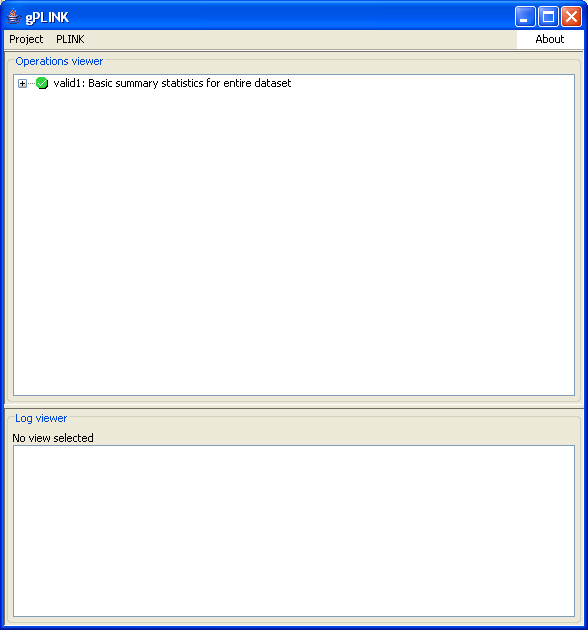

PLINK: Whole genome data analysis toolset

PLINK has finished
When the PLINK job finishes, a message is flashed up and the blue
R
turns to this green symbol. If the PLINK job encountered an error, then a red symbol is shown instead.
Previous
|
Next